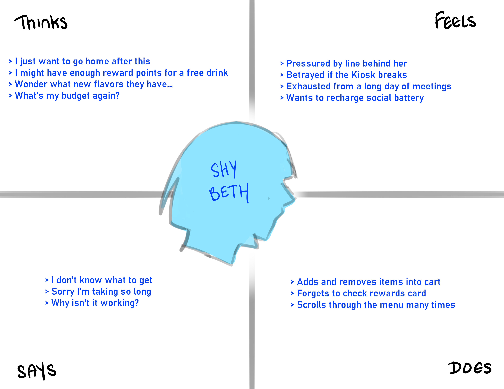
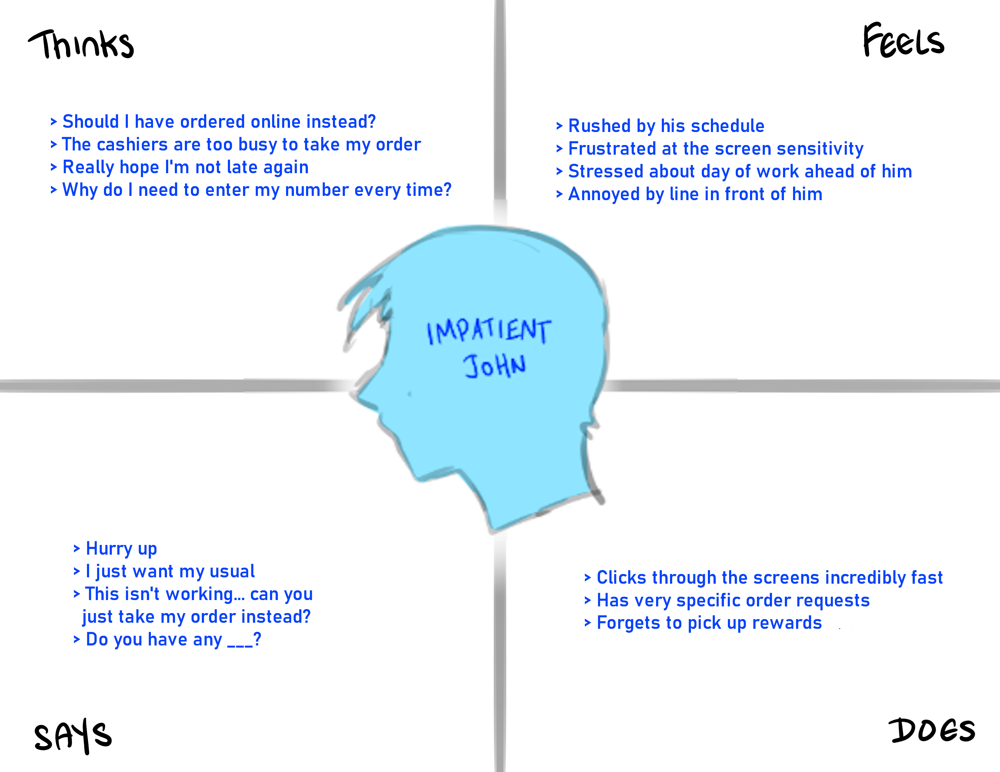

One of the most important aspects of creating an interface that exists in a public space is to consider what kind of persona would use this interface.
For my UIUX course assignment, I take a look at a Kiosk at one of the local bubble tea shops in my area and try to determine the user profile of someone who this product is designed for through a series of interviews, observations, empathy maps, and a storyboard.
The kiosk consists of:
When their order is ready, the application automatically messages the number associated with the order for the customer to pick up, allowing for increased customer mobility and order accuracy as well.
All interviewees responded that the interface was very bright and easy to navigate and understand. If anything, the users who were new to using the kiosk reported it took a bit for them to read through everything, but otherwise throught the device was efficient and clear.
Certain interviewees prefered using the Kiosk over ordering at the counter as it gave them more control over their orders. Others preferred it because they preferred not to talk to people.
Everyone was just concerned with picking their order, which meant that the design was invisible and thus non-intrusive and very intuitive.
Many complained about the touchscreen having blips. One particular user did not like that he was required to enter his phone number, as he was afraid of getting promotional spam.
Beth is a young adult who just ended a long day of work meetings, and just wants to get a drink or a snack before she goes home to recharge her social battery.
The touchscreen is not always responsive. Beth struggles with punching in the buttons and feels pressured by the growing line of people behind her. She struggles between asking for an employee's help and her social anxiety.
Beth is clearly a younger, more shy, more tech-savvy young adult who prefers the comfort, freedom, and privacy of using the kiosk over ordering at the counter. At the kiosk, she's under no pressure to answer questions for her order immediately and can do some exploration with shop items. She is used to online shopping, and so understands the application well. She has the disposable income to come to the tea store and thus, tends to leave bigger tips as well.
John is a college-aged student who has classes to attend in 15 minutes and he knows exactly what drink he usually needs to get him through his day.
John is in a rush. His order is specific and long, and the application sometimes can glitch out or fail to sense his inputs, causing him to lose precious time as if he accidentally clicks through it, he has to go back and restart his mistake. He's frustrated that he has to rush and can't just say his order, which would be faster.
Like Beth, John is also a younger adult who has experience with online shopping and is very comfortable with using a digital interface and getting drinks to go on the road. His long and specific order can sometimes confuse staff and cause them to make mistakes. However, with a digital interface which records specific choices, he would notice that his orders are processed more efficiently. He has more control over what he wants through the kiosk.
Sources: